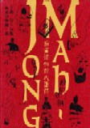

（5b）野口恭一郎
昭和47年、株式会社竹書房を設立。日本で最初の麻雀専門誌である「月刊近代麻雀」を発刊した。
当初は、活字媒体の専門誌のみであったが、やがてコミック専門誌も複数刊行し、麻雀界最大のメディアに成長させた。その影響で他にも麻雀関連メディアが多く誕生した。その結果 マスコミ文化を持たず愛好者間だけの存在であった麻雀ゲームが表文化として広く認識されることとなった。
平成10年（1998年）、千葉県夷隈郡岬町に世界唯一の麻雀博物館を設立した。この麻雀博物館によって、散逸寸前であった貴重な麻雀牌や書籍など、多くの貴重資料が保存された。
この博物館は、単に麻雀資料の保存だけでなく、麻雀史の研究、文化の発信地、中心地として世界に認識される存在となっている。これは麻雀文化にとってはかり知れないほど大きい事績である。特に平成11年（1999年） 麻雀博物館所蔵の資料を網羅した「麻雀博物館大図録」は、麻雀額史上に燦然と輝く大資料である。麻雀博物館大図録昭和９年（1934年）、２月17日、福岡県に生まれる。
昭和34年（1959年）、北九州市 八幡大学（現・九州国際大学）中退。
昭和35年（1960年） シナリオ研究所（第四期）入所。
昭和47年（1972年） （株）竹書房設立 代表取締役 社長に就任。
昭和63年（1988年） （株）竹書房 代表取締役 会長に就任。
平成10年（1998年） 麻雀博物館を設立。理事長に就任。
平成13年（2001年） 日本麻雀競技組織委員会 常任理事に就任。
平成14年（2002年） （株）竹書房 代表取締役 名誉会長に就任。
平成22年（2010年） 死去。享年76歳。
平成22年（2010年）10月7日、直腸癌のため東京都新宿区の病院で死去された。偉大なる先人の旅立ちに際し、多少の思い出話を許されたい。
初めてお目に掛かったのは、いまから30年ほど前（1980年頃（昭和55年頃））。しかし あまりに以前のことのせいか、どんな状況だったのかはっきりとは覚えていない.... その頃、近代麻雀で古川凱章さんをホストとしたルール対談の連載企画があった（「近代麻雀」が まだ活字雑誌の時代）。何回めかの対談相手に選ばれて上京したが、野口会長にお目に掛かったのは、そのときが最初だと思う。初対面のことをはっきり覚えていないのは、たぶん何人かと一緒に簡単に挨拶を交わした程度だったから。※古川さんとの対談のとき、麻雀史の裏話的なエピソードがあったが、それはまた別の機会に。それからしばらくの間は たまに上京したおりに お目に掛かかったり、年賀状のやりとりをする程度であった。しかし1995年頃、麻雀博物館設立の話が持ち上がった頃から、それなりに連絡しあう状況となった。
これもはっきり覚えていないが、'95年か'96年の春頃、勤務先に野口会長から電話があった。それは「麻雀メディアという仕事を通じ、以前から麻雀資料館というべきものを造りたいと思っていたが、このたび着手することにした。千葉県のいすみ市に竹書房の施設があるので、そこを利用する。すでに ある程度の資料は収集してあるが、さらに充実させてゆきたい。いまどういう形の施設にするか検討しているが、何か参考になることがあればよろしく」というような内容であった。
福岡県の大牟田市に「三池カルタ・歴史資料館」という施設がある（三池（みいけ）は日本カルタの発祥の地とされ、それを記念して建てられ施設）。野口会長の電話を受けたとき、ちょうどこのカルタ資料館では麻雀牌の特別展示会が催されていた。縁あって所蔵牌を10数点 貸し出していた。そこでこの特別展示会の話をすると、「さっそく行って見てくる」。中１日おいた翌日、「見てきました」との電話。昨日の今日という感じだったので、あまりの早さに驚いた。聞けば翌日 飛行機を利用して日帰りしたという。そして「展示方法など、大いに参考になった。これを参考にして考えてゆきたい」との話であった。そしてすぐに大車輪で動きだされた。その間 なにか珍しい牌が収集されたとき、すかさず電話をいただいたりした。あるとき名古屋市内を走行中、K帯が鳴った。見れば野口会長から。さっそく道ばたに車を停めて電話に出ると、「浅見さん、また珍しい牌が手に入りそうですよ」。聞けば、花弁牌であるが索子は魚、筒子は蟹で形づくられているという。「いや、それは珍しい」というので、仕事の約束時間が迫っていることも忘れ、 しばらく話し込んでしまったのも懐かしい思い出。そんな準備期間の最中、視察で訪れていたヨーロッパの旅先で思いがけなく病で倒れられた。急遽 その国の病院で手術という話になった。しかし「ここで手術を受けると、長期間 日本へ帰れなくなるおそれがある。それでは博物館のオープンに支障が出る」と云うので、日本での手術を希望。医者に「命の危険がある」と制止されたが、飛行機の通路に横たわり 点滴を受けた状態で帰国。無事、日本で手術を受けて回復した。そして1998年（Ｈ10）、麻雀博物館は予定通りオープンした。その実行力と意志の強さに、あらため感動した。開館から１年後には収蔵品の図録を出版するという計画があった。微力ながら委員の一人として参加したが、収蔵品は膨大。写真撮影から解説などが必要なので、１年ではムズカシイかもと思っていたが、これもみごと予定通り(1999年（H11）)刊行された。2005年09月に改定版が刊行されたが、麻雀に関する最高の研究資料集である。その後は いろいろなことで麻雀博物館を訪問したおり、あるいは竹書房を訪問したときにお目に掛かったりしていた。しかし病が再発ということで、しばらくお目に掛かる機会がないまま、訃報に接してしまった。まさに獅子奮迅で駆け抜けられた人生。いまは ただ ご冥福を祈るばかりである。
以前へ 以降へ 目次へ